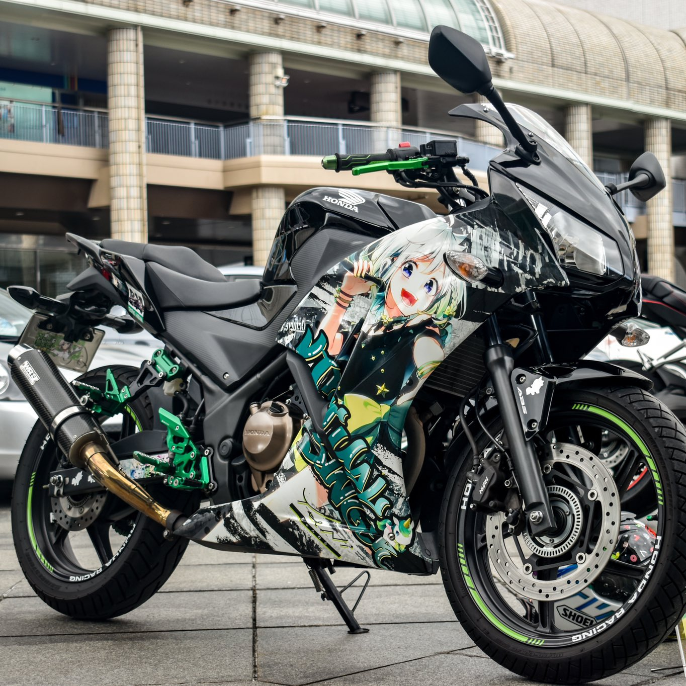
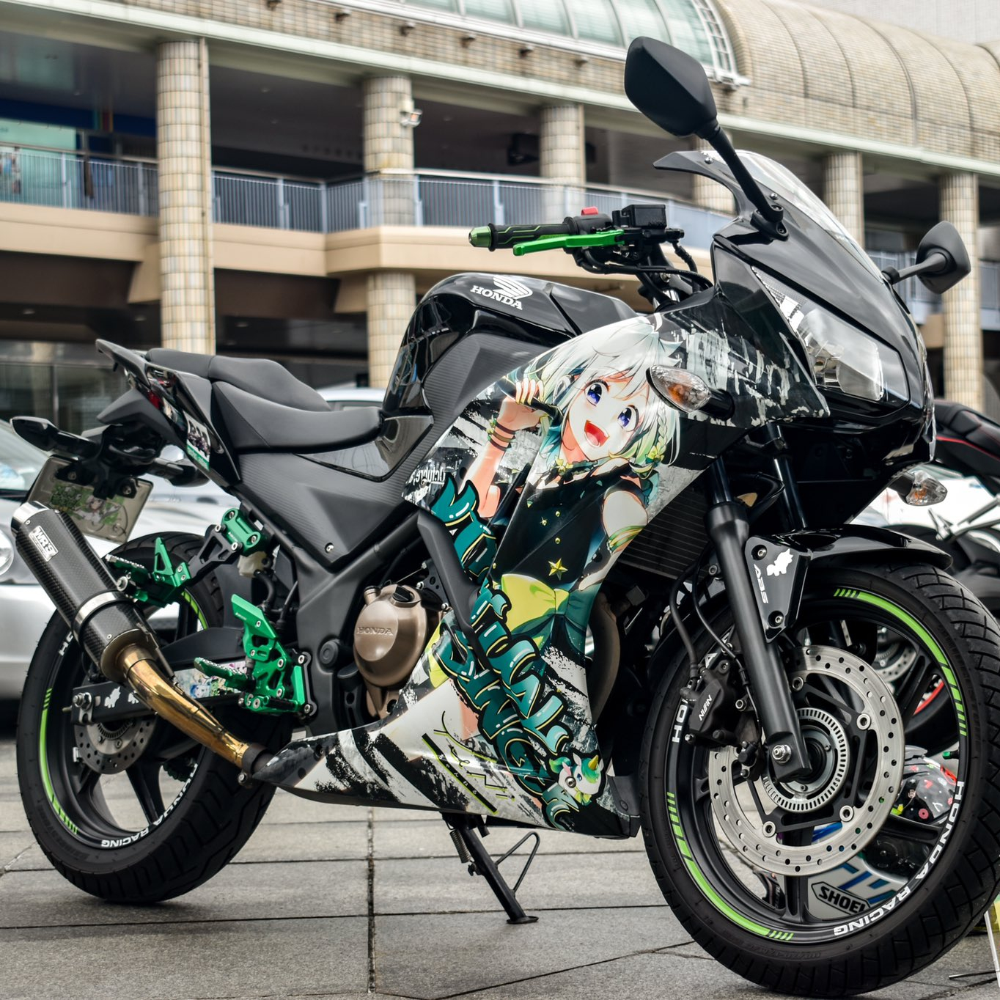

ゆるミとは？
ゆるミはとにかく「緩さ」を大事にしてます！ 縛りがあるのは会場内でのルールぐらいです。後は参加者の方々に任せて、参加者の方々で楽しんでいただきます。運営はそれらの会場準備、搬入出のサポートをさせていただきます。 出入り自由、ルールさえ守れば何をしてもOK、とにかく自由ってのがゆるミです！ あとは実際に来てみてください！

運営スタッフ紹介 ※敬称略
主催 : りゅーじん
ジョーちゃま
冬華
ひろエモソ
ふうか
ヨツメン

ゆるミはとにかく「緩さ」を大事にしてます！ 縛りがあるのは会場内でのルールぐらいです。後は参加者の方々に任せて、参加者の方々で楽しんでいただきます。運営はそれらの会場準備、搬入出のサポートをさせていただきます。 出入り自由、ルールさえ守れば何をしてもOK、とにかく自由ってのがゆるミです！ あとは実際に来てみてください！
主催 : りゅーじん
ジョーちゃま
冬華
ひろエモソ
ふうか
ヨツメン